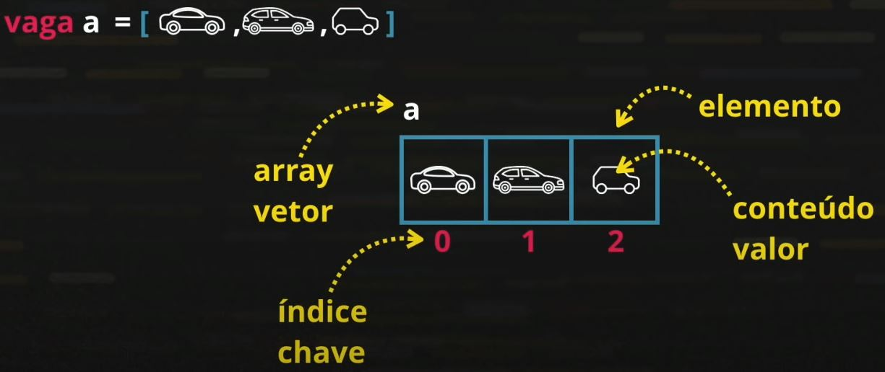

Aula 15 - Variáveis Compostas (Arrays)
Nessa aula aprendemos sobre as variáveis compostas, ou do termo em inglês "array".
O array é uma variável que possui vários elementos. Cada elemento é composto por um valor e uma chave de identificação.

Segue a lista de alguns comandos utilizados em arrays:
- Adição de novos elementos: nomeArray[n] = N ou nomeArray.push(n)
- Verificar o comprimento de um array: nomeArray.length
- Organizar os elementos do array de forma crescente: nomeArray.sort()
- Pesquisar o indice de determinado valor dentro do seu array: nomeArray.indexOf(n)
- Caso encontrar o elemento desejado ele retorna a posição do array na qual o elemento se encontra
- Caso não encontre, o resultado sessa função será "-1"

Exercício: Mostrar um array de 6 elementos do tip número e depois mostrar na tela a posição e o valor dentro dela.
Estrutura de repetição for... in
Nas novas versões do ECMAScript for criada uma nova estrutura de repetição específica para variáveis compostas, o for... in
- For... in: Ele não é composto por três blocos como o for tradicional, ele somente precisa de uma variavel de controle e o nome do array que ele irá percorrer
- Exemplo: for (let variavelControle in array) { bloco de comandos }
Exercício: Montar um array de letras fora de ordem, ordená-las e depois apresentar a posição e o seu valor.